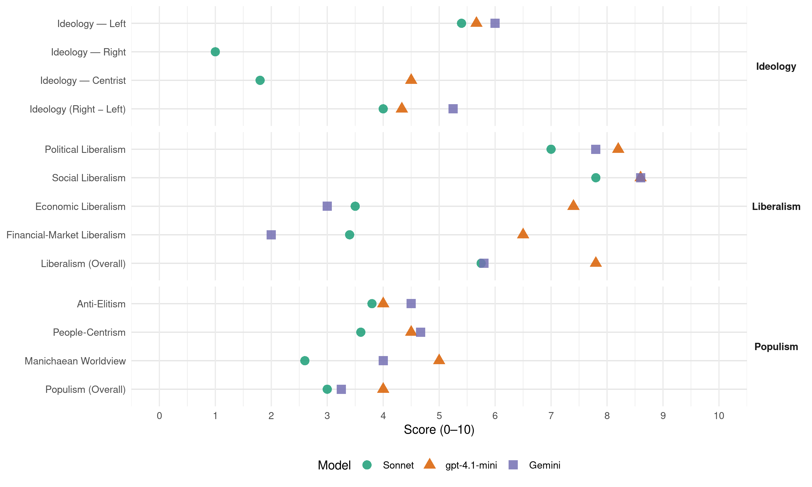

groen! (Belgium, 2007)
manifesto_id 21112_200706
Get full text: This site shows derived annotations and short verbatim quotes only. The full manifesto text is © Manifesto Project / WZB — obtain it via manifesto-project.wzb.eu using the manifesto_id above.
Headline scores
| Dimension | Sonnet | gpt-4.1-mini | Gemini |
|---|---|---|---|
| Populism (Overall) | 3.0 | 4.0 | 3.2 |
| Anti-Elitism | 3.8 | 4.0 | 4.5 |
| People-Centrism | 3.6 | 4.5 | 4.7 |
| Manichaean Worldview | 2.6 | 5.0 | 4.0 |
| Ideology (Right − Left) | 4.0 | 4.3 | 5.2 |
| Liberalism (Overall) | 5.8 | 7.8 | 5.8 |
| Political Liberalism | 7.0 | 8.2 | 7.8 |
| Social Liberalism | 7.8 | 8.6 | 8.6 |
| Economic Liberalism | 3.5 | 7.4 | 3.0 |
| Financial-Market Liberalism | 3.4 | 6.5 | 2.0 |
Evidence per dimension
Economic Liberalism
Gemini · score 3.0 · verified · chunk 1
“Privatisering, deregulering, de vrije markt, werden”
Privatisering, deregulering, de vrije markt, werden zeker in decennia aan het eind van de vorige eeuw geen middelen meer, maar doelen op zich.
Gemini · score 3.0 · verified · chunk 2
“Privatisering, deregulering, de vrije markt”
fundamenteel solidair met de zwakkeren. Privatisering, deregulering, de vrije markt, werden zeker in
Gemini · score 3.0 · verified · chunk 3
“mislukte liberalisering van de energiemarkt”
Laat niet de sociaal kwetsbaren de mislukte liberalisering van de energiemarkt betalen. Steeds meer mensen worden door de commerciële
Gemini · score 5.0 · mixed · chunk 4
“vrije markt heeft een belangrijke plaats”
afweging zeer consciencieus gebeuren De vrije markt heeft een belangrijke plaats in het leveren van
Gemini · score 3.0 · verified · chunk 5
“ondergeschikt maken aan de handelsliberalisering”
Deze prioriteiten mogen we niet ondergeschikt maken aan de handelsliberalisering.
gpt-4.1-mini · score 8.0 · verified · chunk 1
“vrije markt is echter niet bezig met herverdeling”
Privatisering, deregulering, de vrije markt, werden zeker in decennia aan het eind van de vorige eeuw geen middelen meer, maar doelen op zich. De politiek heeft haar beslissingsmacht uit handen gegeven en grotendeels overgedragen aan de raden van beheer van bedrijven en multinationale ondernemingen. De vrije markt is echter niet bezig met herverdeling, en er bestaat geen onzichtbare hand die zorgt voor milieubehoud, natuurbescherming, of voor een ontspannen samenleving, de raden van beheer houden geen rekening met de globale maatschappelijke gevolgen op lange termijn.
gpt-4.1-mini · score 7.0 · verified · chunk 2
“Privatisering, deregulering, de vrije markt, werden zeker in decennia aan het eind van de vorige eeuw geen middelen meer, maar doelen op zich”
…Privatisering, deregulering, de vrije markt, werden zeker in decennia aan het eind van de vorige eeuw geen middelen meer, maar doelen op zich. De politiek heeft haar beslissingsmacht uit handen gegeven…
gpt-4.1-mini · score 7.0 · verified · chunk 3
“Groen! wil dat verdere verlaging van de personenbelasting en de sociale lasten op arbeid worden gecompenseerd door andere inkomsten”
Belastingen hebben zowel een financierende, regulerende als herverdelende rol. Groen! wil dat verdere verlaging van de personenbelasting en de sociale lasten op arbeid worden gecompenseerd door andere inkomsten.
gpt-4.1-mini · score 8.0 · verified · chunk 4
“De vrije markt heeft een belangrijke plaats in het leveren van diensten”
De vrije markt heeft een belangrijke plaats in het leveren van diensten en goederen. In veel gevallen is ruimte voor concurrentie en competitie een goede zaak voor een betere allocatie van goederen en diensten, ten voordele van de samenleving als geheel.
gpt-4.1-mini · score 7.0 · verified · chunk 5
“België zorgt er mee voor dat de EU het voortouw neemt bij het stellen van ecologische en sociale voorwaarden aan de wereldhandel”
De Europese Unie heeft in dit alles een sleutelrol te spelen. We willen dat de EU er onomwonden voor kiest een globale speler te worden voor een andere globalisering, die uitgaat van ecologische rechtvaardigheid. België zorgt er mee voor dat de EU het voortouw neemt bij het stellen van ecologische en sociale voorwaarden aan de wereldhandel.
Sonnet · score 4.0 · mixed · chunk 1
“Privatisering, deregulering, de vrije markt, werden zeker in decennia”
Privatisering, deregulering, de vrije markt, werden zeker in decennia aan het eind van de vorige eeuw geen middelen meer, maar doelen op zich. De politiek heeft haar beslissingsmacht uit handen gegeven
Sonnet · score 3.0 · verified · chunk 2
“Privatisering, deregulering, de vrije markt, werden zeker in decennia aan het eind van de vorige eeuw geen middelen meer, maar doelen op zich”
Privatisering, deregulering, de vrije markt, werden zeker in decennia aan het eind van de vorige eeuw geen middelen meer, maar doelen op zich. De politiek heeft haar beslissingsmacht uit handen gegeven en grotendeels overgedragen aan de raden van beheer van bedrijven en multinationale ondernemingen.
Sonnet · score 4.0 · verified · chunk 3
“mislukte liberalisering van de energiemarkt”
Laat niet de sociaal kwetsbaren de mislukte liberalisering van de energiemarkt betalen. Steeds meer mensen worden door de commerciële energiebedrijven afgesloten
Sonnet · score 5.0 · mixed · chunk 4
“vrije markt heeft een belangrijke plaats”
De vrije markt heeft een belangrijke plaats in het leveren van diensten en goederen. In veel gevallen is ruimte voor concurrentie en competitie een goede zaak
Sonnet · score 4.0 · mixed · chunk 5
“handelsliberalisering”
Deze prioriteiten mogen we niet ondergeschikt maken aan de handelsliberalisering.
Financial-Market Liberalism
Gemini · score 2.0 · verified · chunk 2
“internationale banken en speculatiefondsen meer macht”
stelt vast dat multinationale ondernemingen, internationale banken en speculatiefondsen meer macht hebben dan bevolkingen.
Gemini · score 2.0 · verified · chunk 3
“consumenten beter beschermt tegen overkreditering”
wil een aanpassing van de wetgeving die consumenten beter beschermt tegen overkreditering en die de wildgroei aan kredietsystemen beter reguleert
Gemini · score 2.0 · verified · chunk 4
“Instelling van een Tobin/Spahntaks”
heft het bankgeheim op voor alle internationale transacties. Instelling van een Tobin/Spahntaks. Wat het Belgisch
Gemini · score 2.0 · verified · chunk 5
“heffing op financiële deviezenstromen”
Doel is te komen tot een mondiale heffing op financiële deviezenstromen.
gpt-4.1-mini · score 7.0 · verified · chunk 1
“klimaatfonds”
Groen! wil dat er één federaal Sociaal Klimaatfonds komt (i.p.v. zes federale fondsen nu) om de gewesten te helpen om energiebesparingsmaatregelen bij de gezinnen, in publieke gebouwen en ecologische innovaties bij de bedrijven te financieren.
gpt-4.1-mini · score 7.0 · verified · chunk 2
“banken, beursgenoteerde bedrijven, investeerders geven aan of en hoe ze rekening houden met ethische, milieu- en sociale criteria”
…Ook voor financiële producten (beleggingen, investeringen) is volledige transparantie nodig. Banken, beursgenoteerde bedrijven, investeerders geven aan of en hoe ze rekening houden met ethische, milieu- en sociale criteria…
gpt-4.1-mini · score 7.0 · verified · chunk 4
“De overheid geeft ook het goede voorbeeld door de aanschaf van fair trade producten”
De overheid geeft ook het goede voorbeeld door de aanschaf van fair trade producten. Typebestekken en aanbestedingen vermelden ecologische en sociale clausules. Overheden hebben een voorbeeldfunctie op het vlak van ethisch sparen en beleggen.
gpt-4.1-mini · score 5.0 · verified · chunk 5
“De EU heft het bankgeheim op voor alle internationale transacties. Instelling van een Tobin/Spahntaks”
4.24 De EU heft het bankgeheim op voor alle internationale transacties. Instelling van een Tobin/Spahntaks. Wat het Belgisch parlement al heeft goedgekeurd in dit verband, zou ook op Europees verband moeten worden verdedigd door België. Doel is te komen tot een mondiale heffing op financiële deviezenstromen.
Sonnet · score 4.0 · verified · chunk 1
“zware financiële crisissen worden voorkomen en dat belastingparadijzen worden aangepakt”
Groen! wil dat sociale en ecologische waarden worden opgenomen in het wereldhandelsregime, dat zware financiële crisissen worden voorkomen en dat belastingparadijzen worden aangepakt.
Sonnet · score 3.0 · verified · chunk 2
“internationale banken en speculatiefondsen meer macht hebben dan bevolkingen”
Groen! plaatst het grootste humanitaire probleem van deze tijd, de massale armoede in het Zuiden, boven aan de politieke agenda, maar stelt vast dat multinationale ondernemingen, internationale banken en speculatiefondsen meer macht hebben dan bevolkingen. Daarom wil Groen! dat er gesleuteld wordt aan een wereldeconomie die menselijke waardigheid voor allen garandeert
Sonnet · score 4.0 · verified · chunk 3
“belasting op vermogensinkomsten vanaf € 500.000”
De grote kapitalen (aandelen, kapitaal op rekeningen, geld, onroerend goed) en de inkomens uit vermogens op een meer billijke wijze laten bijdragen. Er komt een belasting op vermogensinkomsten vanaf € 500.000.
Sonnet · score 3.0 · verified · chunk 4
“instelling van een Tobin/Spahntaks”
De EU heft het bankgeheim op voor alle internationale transacties. Instelling van een Tobin/Spahntaks. Wat het Belgisch parlement al heeft goedgekeurd in dit verband
Sonnet · score 3.0 · verified · chunk 5
“instelling van een Tobin/Spahntaks”
De EU heft het bankgeheim op voor alle internationale transacties. Instelling van een Tobin/Spahntaks. Wat het Belgisch parlement al heeft goedgekeurd in dit verband
Political Liberalism
Gemini · score 7.0 · verified · chunk 1
“transparante en democratisch verkozen overheden”
op het juiste niveau, door transparante en democratisch verkozen overheden. Wat betreft mondiale milieuproblemen
Gemini · score 8.0 · verified · chunk 2
“transparante en democratisch verkozen overheden”
het juiste niveau, door transparante en democratisch verkozen overheden. Wat betreft mondiale
Gemini · score 8.0 · verified · chunk 3
“een algemeen hoorrecht in alle gerechtelijke procedures”
rechtspositie verbeteren. Dat kan onder meer door de invoering van een algemeen hoorrecht in alle gerechtelijke procedures waarin zijn belangen op het spel staan
Gemini · score 8.0 · verified · chunk 4
“handhaving van de rechtsstaat en de democratie”
arbeid, zorg en inkomen, en handhaving van de rechtsstaat en de democratie 3.20 Alle burgers gelijkwaardig
Gemini · score 8.0 · verified · chunk 5
“democratisering van de WTO”
Er is evenzeer nood aan een democratisering van de WTO (betere mogelijkheden voor arme landen
gpt-4.1-mini · score 8.0 · verified · chunk 1
“democratisch verkozen overheden”
Prioritair in de omslag naar een ecologische economie is het vastleggen van een ecologisch duurzame schaal, op het juiste niveau, door transparante en democratisch verkozen overheden.
gpt-4.1-mini · score 8.0 · verified · chunk 2
“transparante en democratisch verkozen overheden”
…Prioritair in de omslag naar een ecologische economie is het vastleggen van een ecologisch duurzame schaal, op het juiste niveau, door transparante en democratisch verkozen overheden…
gpt-4.1-mini · score 8.0 · verified · chunk 3
“De patiënt staat centraal. De ganse organisatie van onze gezondheidszorg moet in functie staan van de noden van de patiënten”
De patiënt staat centraal. De ganse organisatie van onze gezondheidszorg moet in functie staan van de noden van de patiënten en dus niet gestuurd worden op basis van de eisen van belangengroepen of de winsthonger van (farmaceutische) bedrijven.
gpt-4.1-mini · score 9.0 · verified · chunk 4
“Een goed werkende democratie is essentieel als tegengewicht”
Een goed werkende democratie is essentieel als tegengewicht tegen een stille overname door de markt of een te ver doorgeschoten technocratie en expertocratie.
gpt-4.1-mini · score 8.0 · verified · chunk 5
“De VN is en blijft de basis van de internationale rechtsorde”
4.47 De VN is en blijft de basis van de internationale rechtsorde. Een hervorming en versterking van de rol van de VNVeiligheidsraad is aangewezen. Zo zou het vetorecht moeten afgeschaft worden en vervangen door een meerderheidsstemming. Een meer representatieve samenstelling van de Veiligheidsraad is eveneens nodig, voor wat betreft de vertegenwoordiging van de verschillende grote regio’s.
Sonnet · score 6.0 · verified · chunk 1
“meer democratische controle over de energievoorziening”
heldere objectieven inzake de noodzakelijke energietransitie, klimaatbeleid, nieuwe tewerkstelling door ecologische innovatie, de strijd tegen energiearmoede en sociale ongelijkheid en meer democratische controle over de energievoorziening.
Sonnet · score 6.0 · verified · chunk 2
“transparante en democratisch verkozen overheden”
Prioritair in de omslag naar een ecologische economie is het vastleggen van een ecologisch duurzame schaal, op het juiste niveau, door transparante en democratisch verkozen overheden.
Sonnet · score 7.0 · verified · chunk 3
“een volwaardige administratieve rechtbank worden”
Dit rechtscollege moet een volwaardige administratieve rechtbank worden met volheid van bevoegdheid, de procedure moet mondeling verlopen
Sonnet · score 8.0 · verified · chunk 4
“goed werkende democratie is essentieel”
Een goed werkende democratie is essentieel als tegengewicht tegen een stille overname door de markt of een te ver doorgeschoten technocratie en expertocratie.
Sonnet · score 8.0 · verified · chunk 5
“sterkere parlementaire democratie, transparantie, het verankeren van fundamentele rechten”
Wij willen een ambitieus en coherent constitutioneel verdrag voor de EU. Dat verdrag moet gericht zijn op een sterkere parlementaire democratie, transparantie, het verankeren van fundamentele rechten
Liberalism (Overall)
Gemini · score 6.0 · verified · chunk 1
“Privatisering, deregulering, de vrije markt, werden”
Privatisering, deregulering, de vrije markt, werden zeker in decennia aan het eind van de vorige eeuw geen middelen meer, maar doelen op zich.
Gemini · score 5.0 · verified · chunk 2
“transparante en democratisch verkozen overheden”
het juiste niveau, door transparante en democratisch verkozen overheden. Wat betreft mondiale
Gemini · score 6.0 · verified · chunk 3
“bestrijding van discriminatie”
etnische afkomt meer kansen geeft door vorming op maat en bestrijding van discriminatie. 2.25 Betere bescherming tegen overkreditering.
Gemini · score 6.0 · verified · chunk 4
“handhaving van de rechtsstaat en de democratie”
arbeid, zorg en inkomen, en handhaving van de rechtsstaat en de democratie 3.20 Alle burgers gelijkwaardig
Gemini · score 6.0 · verified · chunk 5
“bescherming van de mensenrechten”
Om een betere bescherming van de mensenrechten in België te waarborgen is het nodig
gpt-4.1-mini · score 8.0 · verified · chunk 1
“transparante en democratisch verkozen overheden”
Prioritair in de omslag naar een ecologische economie is het vastleggen van een ecologisch duurzame schaal, op het juiste niveau, door transparante en democratisch verkozen overheden.
gpt-4.1-mini · score 8.0 · verified · chunk 2
“transparante en democratisch verkozen overheden”
…Prioritair in de omslag naar een ecologische economie is het vastleggen van een ecologisch duurzame schaal, op het juiste niveau, door transparante en democratisch verkozen overheden…
gpt-4.1-mini · score 8.0 · verified · chunk 3
“De patiënt staat centraal. De ganse organisatie van onze gezondheidszorg moet in functie staan van de noden van de patiënten”
De patiënt staat centraal. De ganse organisatie van onze gezondheidszorg moet in functie staan van de noden van de patiënten en dus niet gestuurd worden op basis van de eisen van belangengroepen of de winsthonger van (farmaceutische) bedrijven.
gpt-4.1-mini · score 8.0 · verified · chunk 4
“Een goed werkende democratie is essentieel als tegengewicht”
Een goed werkende democratie is essentieel als tegengewicht tegen een stille overname door de markt of een te ver doorgeschoten technocratie en expertocratie.
gpt-4.1-mini · score 7.0 · verified · chunk 5
“De VN is en blijft de basis van de internationale rechtsorde”
4.47 De VN is en blijft de basis van de internationale rechtsorde. Een hervorming en versterking van de rol van de VNVeiligheidsraad is aangewezen. Zo zou het vetorecht moeten afgeschaft worden en vervangen door een meerderheidsstemming. Een meer representatieve samenstelling van de Veiligheidsraad is eveneens nodig, voor wat betreft de vertegenwoordiging van de verschillende grote regio’s.
Sonnet · score 5.0 · mixed · chunk 1
“Privatisering, deregulering, de vrije markt, werden zeker in decennia”
Privatisering, deregulering, de vrije markt, werden zeker in decennia aan het eind van de vorige eeuw geen middelen meer, maar doelen op zich.
Sonnet · score 5.0 · verified · chunk 2
“transparante en democratisch verkozen overheden”
Prioritair in de omslag naar een ecologische economie is het vastleggen van een ecologisch duurzame schaal, op het juiste niveau, door transparante en democratisch verkozen overheden.
Sonnet · score 6.0 · verified · chunk 3
“gelijke kansen creëert, ongelijkheden wegneemt”
Groen! wil een beleid dat gelijke kansen creëert, ongelijkheden wegneemt, iedereen voor zijn of haar eigen verantwoordelijkheid stelt
Sonnet · score 6.0 · verified · chunk 4
“goed werkende democratie is essentieel”
Een goed werkende democratie is essentieel als tegengewicht tegen een stille overname door de markt of een te ver doorgeschoten technocratie en expertocratie.
Sonnet · score 6.0 · verified · chunk 5
“sterkere parlementaire democratie, transparantie, het verankeren van fundamentele rechten”
Wij willen een ambitieus en coherent constitutioneel verdrag voor de EU. Dat verdrag moet gericht zijn op een sterkere parlementaire democratie, transparantie, het verankeren van fundamentele rechten
Anti-Elitism
Gemini · score 4.0 · verified · chunk 1
“bedreiging voor alle grootschalige energiebedrijven en alle politieke elites”
wezenlijke bedreiging voor alle grootschalige energiebedrijven en alle politieke elites die hun macht daarop gebouwd hebben.
Gemini · score 6.0 · verified · chunk 2
“multinationale ondernemingen, internationale banken en speculatiefondsen meer macht hebben dan bevolkingen”
stelt vast dat multinationale ondernemingen, internationale banken en speculatiefondsen meer macht hebben dan bevolkingen. Daarom wil Groen!
Gemini · score 4.0 · verified · chunk 3
“Het gezinsbeleid van paars de voorbije jaren faalde”
en een versterking van een kindvriendelijk klimaat in onze samenleving. Het gezinsbeleid van paars de voorbije jaren faalde. De ‘Staten Generaal voor het Gezin’ van staatssecretaris
Gemini · score 4.0 · verified · chunk 4
“stille machtsovername door de markt”
bondgenoot van overheid als tegengewicht tegen de stille machtsovername door de markt. Groen! pleit
gpt-4.1-mini · score 3.0 · verified · chunk 1
“De politiek mag haar verantwoordelijkheid niet afwentelen”
De mensen zelf dragen verantwoordelijkheid bij de keuzes die ze maken in hun leven. Maar de politiek mag haar verantwoordelijkheid niet afwentelen op de burgers. De overheid moet een kader creëren om mensen de kans te geven om duurzame keuzes te maken.
gpt-4.1-mini · score 7.0 · verified · chunk 2
“multinationale ondernemingen, internationale banken en speculatiefondsen meer macht hebben dan bevolkingen”
…massale armoede in het Zuiden, boven aan de politieke agenda, maar stelt vast dat multinationale ondernemingen, internationale banken en speculatiefondsen meer macht hebben dan bevolkingen. Daarom wil Groen! dat er gesleuteld wordt aan een wereldeconomie die menselijke waardigheid voor allen garandeert…
gpt-4.1-mini · score 2.0 · verified · chunk 4
“tegen de stille machtsovername door de markt”
Het middenveld is een belangrijke bondgenoot van overheid als tegengewicht tegen de stille machtsovername door de markt. Groen! pleit voor een eigentijdse relatie tussen overheid en middenveld: maximale betrokkenheid en overleg, maar respect voor ieders eigen rol.
Sonnet · score 4.0 · verified · chunk 1
“multinationale ondernemingen, internationale banken en speculatiefondsen meer macht hebben dan bevolkingen”
stelt vast dat multinationale ondernemingen, internationale banken en speculatiefondsen meer macht hebben dan bevolkingen. Daarom wil Groen! dat er gesleuteld wordt aan een wereldeconomie
Sonnet · score 6.0 · verified · chunk 2
“multinationale ondernemingen, internationale banken en speculatiefondsen meer macht hebben dan bevolkingen”
Groen! plaatst het grootste humanitaire probleem van deze tijd, de massale armoede in het Zuiden, boven aan de politieke agenda, maar stelt vast dat multinationale ondernemingen, internationale banken en speculatiefondsen meer macht hebben dan bevolkingen. Daarom wil Groen! dat er gesleuteld wordt aan een wereldeconomie
Sonnet · score 3.0 · verified · chunk 3
“winsthonger van (farmaceutische) bedrijven”
niet gestuurd worden op basis van de eisen van belangengroepen of de winsthonger van (farmaceutische) bedrijven. Essentieel daarbij is het zelfbeschikkingsrecht
Sonnet · score 3.0 · verified · chunk 4
“stille machtsovername door de markt”
Het middenveld is een belangrijke bondgenoot van overheid als tegengewicht tegen de stille machtsovername door de markt.
Sonnet · score 3.0 · verified · chunk 5
“greep van multinationale ondernemingen (MNO’s) op de landbouw te beperken”
Er is nood aan extra maatregelen de greep van multinationale ondernemingen (MNO’s) op de landbouw te beperken en de positie van landbouwers te versterken.
Ideology — Centrist
gpt-4.1-mini · score 5.0 · verified · chunk 2
“De gemeenschap, de overheid, de wetgevende macht, mogen en moeten zich bemoeien met de fundamentele economische keuzes”
…De economie overkomt ons niet, economische keuzes maken we zelf. De gemeenschap, de overheid, de wetgevende macht, mogen en moeten zich bemoeien met de fundamentele economische keuzes, zowel op nationaal als op internationaal niveau…
gpt-4.1-mini · score 4.0 · verified · chunk 4
“Mensen zijn als burger altijd lid van verschillende gemeenschappen tegelijk”
Groen! pleit voor een brede invulling van het burgerschap: wij spreken van meervoudig burgerschap. Mensen zijn als burger altijd lid van verschillende gemeenschappen tegelijk. Zowel in de eigen wijk, gemeente of stad als in het gewest én in België én in de Europese Unie komen regels tot stand die betrekking hebben op de burgers.
Sonnet · score 2.0 · verified · chunk 1
“een economie die ten dienste staat van de mens”
het nieuwe denkkader van de ecologische economie: een economie die ten dienste staat van de mens en niet omgekeerd
Sonnet · score 2.0 · verified · chunk 2
“De economie overkomt ons niet, economische keuzes maken we zelf”
De vrije markt is echter niet bezig met herverdeling, en er bestaat geen onzichtbare hand die zorgt voor milieubehoud. De economie overkomt ons niet, economische keuzes maken we zelf. De gemeenschap, de overheid, de wetgevende macht, mogen en moeten zich bemoeien met de fundamentele economische keuzes
Sonnet · score 1.0 · verified · chunk 3
“Groen! wil een sterker gezinsbeleid”
Groen! wil meer levenskwaliteit en een sterker gezinsbeleid. Dat vereist ook extra inspanningen op federaal vlak.
Sonnet · score 2.0 · verified · chunk 4
“meervoudig burgerschap”
Groen! pleit voor een brede invulling van het burgerschap: wij spreken van meervoudig burgerschap.
Sonnet · score 2.0 · verified · chunk 5
“democratisering van de WTO”
Er is evenzeer nood aan een democratisering van de WTO (betere mogelijkheden voor arme landen, medezeggenschap door het EP, nationale parlementen en internationale NGO’s
Ideology — Left
Gemini · score 6.0 · verified · chunk 1
“ecologische herverdeling. Daartoe is het model”
en ecologische politiek is altijd ook en zelfs in belangrijke mate een kwestie van ecologische herverdeling. Daartoe is het model ontwikkeld
Gemini · score 8.0 · verified · chunk 2
“gericht op de herverdeling van rijkdom”
bevordert de autonomie van de mens en is gericht op de herverdeling van rijkdom. Ze is gebaseerd
Gemini · score 4.0 · verified · chunk 3
“de inkomensongelijkheid niet langer toeneemt”
fiskaal beleid waarbij de inkomensongelijkheid niet langer toeneemt. Naast een verhoging van de laagste uitkeringen
Gemini · score 6.0 · verified · chunk 4
“stille machtsovername door de markt”
bondgenoot van overheid als tegengewicht tegen de stille machtsovername door de markt. Groen! pleit
gpt-4.1-mini · score 6.0 · verified · chunk 1
“Groen! pleit voor rechtvaardige progressieve belastingssystemen, grootkapitaalbelasting”
Groen! pleit daarom voor rechtvaardige progressieve belastingssystemen, grootkapitaalbelasting, een verschuiving van de fiscale last op arbeid naar milieuvervuiling en grote vermogens en voor eerlijke handelsmechanismen.
gpt-4.1-mini · score 8.0 · verified · chunk 2
“rechtvaardige progressieve belastingssystemen, grootkapitaalbelasting, een verschuiving van de fiscale last op arbeid naar milieuvervuiling en grote vermogens”
…Groen! pleit daarom voor rechtvaardige progressieve belastingssystemen, grootkapitaalbelasting, een verschuiving van de fiscale last op arbeid naar milieuvervuiling en grote vermogens en voor eerlijke handelsmechanismen…
gpt-4.1-mini · score 3.0 · verified · chunk 4
“tegen de stille machtsovername door de markt”
Het middenveld is een belangrijke bondgenoot van overheid als tegengewicht tegen de stille machtsovername door de markt. Groen! pleit voor een eigentijdse relatie tussen overheid en middenveld: maximale betrokkenheid en overleg, maar respect voor ieders eigen rol.
Sonnet · score 6.0 · verified · chunk 1
“verschuiving van de fiscale last op arbeid naar milieuvervuiling en grote vermogens”
Groen! pleit daarom voor rechtvaardige progressieve belastingssystemen, grootkapitaalbelasting, een verschuiving van de fiscale last op arbeid naar milieuvervuiling en grote vermogens en voor eerlijke handelsmechanismen.
Sonnet · score 7.0 · verified · chunk 2
“gericht op de herverdeling van rijkdom”
Een ecologische economie bevordert de autonomie van de mens en is gericht op de herverdeling van rijkdom. Ze is gebaseerd op de behoeften van mensen, geeft iedereen gelijke kansen, en is fundamenteel solidair met de zwakkeren.
Sonnet · score 5.0 · verified · chunk 3
“inkomens uit grote vermogens zwaarder belast”
rechtvaardige fiscaliteit die inkomsten uit arbeid en uit vermogen opnieuw in evenwicht brengt en dus inkomens uit grote vermogens zwaarder belast.
Sonnet · score 4.0 · verified · chunk 4
“greep van multinationale ondernemingen (MNO’s) op de landbouw te beperken”
Er is nood aan extra maatregelen de greep van multinationale ondernemingen (MNO’s) op de landbouw te beperken en de positie van landbouwers te versterken.
Sonnet · score 5.0 · verified · chunk 5
“antitrustmaatregelen, vergroting van de transparantie en aansprakelijkheid van bedrijven”
Het gaat hierbij onder meer over: antitrustmaatregelen, vergroting van de transparantie en aansprakelijkheid van bedrijven, verbod op octrooien op levend organismen
Ideology (Right − Left)
Gemini · score 5.0 · verified · chunk 1
“ecologische herverdeling. Daartoe is het model”
en ecologische politiek is altijd ook en zelfs in belangrijke mate een kwestie van ecologische herverdeling. Daartoe is het model ontwikkeld
Gemini · score 8.0 · verified · chunk 2
“gericht op de herverdeling van rijkdom”
bevordert de autonomie van de mens en is gericht op de herverdeling van rijkdom. Ze is gebaseerd
Gemini · score 3.0 · verified · chunk 3
“de inkomensongelijkheid niet langer toeneemt”
fiskaal beleid waarbij de inkomensongelijkheid niet langer toeneemt. Naast een verhoging van de laagste uitkeringen
Gemini · score 5.0 · verified · chunk 4
“stille machtsovername door de markt”
bondgenoot van overheid als tegengewicht tegen de stille machtsovername door de markt. Groen! pleit
gpt-4.1-mini · score 4.0 · verified · chunk 1
“De politiek mag haar verantwoordelijkheid niet afwentelen”
De mensen zelf dragen verantwoordelijkheid bij de keuzes die ze maken in hun leven. Maar de politiek mag haar verantwoordelijkheid niet afwentelen op de burgers. De overheid moet een kader creëren om mensen de kans te geven om duurzame keuzes te maken.
gpt-4.1-mini · score 6.0 · verified · chunk 2
“multinationale ondernemingen, internationale banken en speculatiefondsen meer macht hebben dan bevolkingen”
…massale armoede in het Zuiden, boven aan de politieke agenda, maar stelt vast dat multinationale ondernemingen, internationale banken en speculatiefondsen meer macht hebben dan bevolkingen. Daarom wil Groen! dat er gesleuteld wordt aan een wereldeconomie die menselijke waardigheid voor allen garandeert…
gpt-4.1-mini · score 3.0 · verified · chunk 4
“tegen de stille machtsovername door de markt”
Het middenveld is een belangrijke bondgenoot van overheid als tegengewicht tegen de stille machtsovername door de markt. Groen! pleit voor een eigentijdse relatie tussen overheid en middenveld: maximale betrokkenheid en overleg, maar respect voor ieders eigen rol.
Sonnet · score 5.0 · verified · chunk 1
“verschuiving van de fiscale last op arbeid naar milieuvervuiling en grote vermogens”
Groen! pleit daarom voor rechtvaardige progressieve belastingssystemen, grootkapitaalbelasting, een verschuiving van de fiscale last op arbeid naar milieuvervuiling en grote vermogens
Sonnet · score 6.0 · verified · chunk 2
“gericht op de herverdeling van rijkdom”
Een ecologische economie bevordert de autonomie van de mens en is gericht op de herverdeling van rijkdom. Ze is gebaseerd op de behoeften van mensen, geeft iedereen gelijke kansen, en is fundamenteel solidair met de zwakkeren.
Sonnet · score 3.0 · verified · chunk 3
“inkomens uit grote vermogens zwaarder belast”
rechtvaardige fiscaliteit die inkomsten uit arbeid en uit vermogen opnieuw in evenwicht brengt en dus inkomens uit grote vermogens zwaarder belast.
Sonnet · score 3.0 · verified · chunk 4
“stille machtsovername door de markt”
Het middenveld is een belangrijke bondgenoot van overheid als tegengewicht tegen de stille machtsovername door de markt.
Sonnet · score 3.0 · verified · chunk 5
“antitrustmaatregelen, vergroting van de transparantie en aansprakelijkheid van bedrijven”
Het gaat hierbij onder meer over: antitrustmaatregelen, vergroting van de transparantie en aansprakelijkheid van bedrijven, verbod op octrooien op levend organismen
Ideology — Right
Sonnet · score 1.0 · verified · chunk 2
“lokale productie voor lokale consumptie”
Een belangrijk principe hierbij is lokale productie voor lokale consumptie. De omslag naar een ecologische economie is ook gebaseerd op ecologische innovatie.
Sonnet · score 1.0 · verified · chunk 3
“tijdelijke migratieprogramma’s voor deze mensen”
Voor deze personen die niet in die categorieën vallen moet een wettelijk kader voor migratie uitgewerkt worden. Groen! pleit voor de uitwerking van tijdelijke migratieprogramma’s voor deze mensen.
Sonnet · score 1.0 · verified · chunk 4
“enge invulling van nationalisme”
Een enge invulling van nationalisme, dat mensen oproept zich te scharen achter een (veronderstelde) eigenheid of identiteit, is een variant van hetzelfde conservatisme.
Manichaean Worldview
Gemini · score 4.0 · verified · chunk 2
“alternatief voor een kil liberalisme, dat mensen en natuur opoffert aan winstbejag”
de mens is de maat der dingen in een solidaire samenleving. Groen! is het alternatief voor een kil liberalisme, dat mensen en natuur opoffert aan winstbejag. Groen! kiest voor
gpt-4.1-mini · score 5.0 · verified · chunk 2
“multinationale ondernemingen, internationale banken en speculatiefondsen meer macht hebben dan bevolkingen”
…massale armoede in het Zuiden, boven aan de politieke agenda, maar stelt vast dat multinationale ondernemingen, internationale banken en speculatiefondsen meer macht hebben dan bevolkingen. Daarom wil Groen! dat er gesleuteld wordt aan een wereldeconomie die menselijke waardigheid voor allen garandeert…
Sonnet · score 3.0 · verified · chunk 1
“winsthonger van bepaalde bedrijven”
mensen die met hun leven betalen voor de winsthonger van bepaalde bedrijven. De producenten moeten daarbij verantwoordelijk worden gesteld.
Sonnet · score 4.0 · verified · chunk 2
“Groen! is het alternatief voor een kil liberalisme”
Niet de economie, maar de mens is de maat der dingen in een solidaire samenleving. Groen! is het alternatief voor een kil liberalisme, dat mensen en natuur opoffert aan winstbejag. Groen! kiest voor menselijkheid en solidariteit.
Sonnet · score 2.0 · verified · chunk 3
“groeiende kloof tussen arm en rijk is een bom”
De voorbije jaren zijn in ons land de armoede en ongelijkheid toegenomen. De groeiende kloof tussen arm en rijk is een bom onder sociale samenhang.
Sonnet · score 2.0 · verified · chunk 4
“stille overname door de markt of een te ver doorgeschoten technocratie”
Een goed werkende democratie is essentieel als tegengewicht tegen een stille overname door de markt of een te ver doorgeschoten technocratie en expertocratie.
Sonnet · score 2.0 · verified · chunk 5
“sociale en ecologische dumping”
Handelsregels moeten beschermen tegen sociale en ecologische dumping.
People-Centrism
Gemini · score 3.0 · verified · chunk 1
“straten terug heroveren voor de mensen”
Groen! wil de straten terug heroveren voor de mensen. Ook dat betekent dat we duidelijke
Gemini · score 5.0 · verified · chunk 2
“gebaseerd op de behoeften van mensen”
herverdeling van rijkdom. Ze is gebaseerd op de behoeften van mensen, geeft iedereen gelijke kansen
Gemini · score 6.0 · verified · chunk 4
“vooral ook door de burgers”
samenleving wordt niet enkel gemaakt voor, maar vooral ook door de burgers. Voor Groen! is de
gpt-4.1-mini · score 6.0 · verified · chunk 2
“De economie overkomt ons niet, economische keuzes maken we zelf”
…De vrije markt is echter niet bezig met herverdeling, en er bestaat geen onzichtbare hand die zorgt voor milieubehoud… De economie overkomt ons niet, economische keuzes maken we zelf. De gemeenschap, de overheid, de wetgevende macht, mogen en moeten zich bemoeien met de fundamentele economische keuzes…
gpt-4.1-mini · score 3.0 · verified · chunk 4
“Mensen zijn als burger altijd lid van verschillende gemeenschappen tegelijk”
Groen! pleit voor een brede invulling van het burgerschap: wij spreken van meervoudig burgerschap. Mensen zijn als burger altijd lid van verschillende gemeenschappen tegelijk. Zowel in de eigen wijk, gemeente of stad als in het gewest én in België én in de Europese Unie komen regels tot stand die betrekking hebben op de burgers.
Sonnet · score 3.0 · verified · chunk 1
“een economie die ten dienste staat van de mens”
het nieuwe denkkader van de ecologische economie: een economie die ten dienste staat van de mens en niet omgekeerd, die rekening houdt met wat mens en planeet aankunnen
Sonnet · score 5.0 · verified · chunk 2
“Een ecologische economie bevordert de autonomie van de mens”
Sociale duurzaamheid heeft ook te maken met het gelijkwaardig betrekken van alle groepen van de maatschappij in het economische gebeuren. Een ecologische economie bevordert de autonomie van de mens en is gericht op de herverdeling van rijkdom. Ze is gebaseerd op de behoeften van mensen, geeft iedereen gelijke kansen
Sonnet · score 3.0 · verified · chunk 3
“solidariteit kan bieden én tegelijk voldoende individuele keuzevrijheid”
zodat ze meer dan vandaag zekerheid, bescherming en solidariteit kan bieden én tegelijk voldoende individuele keuzevrijheid om de levensloop vorm te geven.
Sonnet · score 4.0 · verified · chunk 4
“burger veel meer dan een (klagende of tevreden) klant”
Voor Groen! is de burger veel meer dan een (klagende of tevreden) klant. Groen! wil burgers volop bij het beleid betrekken
Sonnet · score 3.0 · verified · chunk 5
“belangen van de bevolking van de ontwikkelingslanden gegarandeerd worden”
In de onderhandelingen voor diensten (GATS) moeten de belangen van de bevolking van de ontwikkelingslanden gegarandeerd worden
Populism (Overall)
Gemini · score 3.0 · verified · chunk 1
“bedreiging voor alle grootschalige energiebedrijven en alle politieke elites”
wezenlijke bedreiging voor alle grootschalige energiebedrijven en alle politieke elites die hun macht daarop gebouwd hebben.
Gemini · score 5.0 · verified · chunk 2
“alternatief voor een kil liberalisme, dat mensen en natuur opoffert aan winstbejag”
de mens is de maat der dingen in een solidaire samenleving. Groen! is het alternatief voor een kil liberalisme, dat mensen en natuur opoffert aan winstbejag. Groen! kiest voor
Gemini · score 2.0 · verified · chunk 3
“Het gezinsbeleid van paars de voorbije jaren faalde”
en een versterking van een kindvriendelijk klimaat in onze samenleving. Het gezinsbeleid van paars de voorbije jaren faalde. De ‘Staten Generaal voor het Gezin’ van staatssecretaris
Gemini · score 3.0 · verified · chunk 4
“stille machtsovername door de markt”
bondgenoot van overheid als tegengewicht tegen de stille machtsovername door de markt. Groen! pleit
gpt-4.1-mini · score 6.0 · verified · chunk 2
“multinationale ondernemingen, internationale banken en speculatiefondsen meer macht hebben dan bevolkingen”
…massale armoede in het Zuiden, boven aan de politieke agenda, maar stelt vast dat multinationale ondernemingen, internationale banken en speculatiefondsen meer macht hebben dan bevolkingen. Daarom wil Groen! dat er gesleuteld wordt aan een wereldeconomie die menselijke waardigheid voor allen garandeert…
gpt-4.1-mini · score 2.0 · verified · chunk 4
“tegen de stille machtsovername door de markt”
Het middenveld is een belangrijke bondgenoot van overheid als tegengewicht tegen de stille machtsovername door de markt. Groen! pleit voor een eigentijdse relatie tussen overheid en middenveld: maximale betrokkenheid en overleg, maar respect voor ieders eigen rol.
Sonnet · score 3.0 · verified · chunk 1
“multinationale ondernemingen, internationale banken en speculatiefondsen meer macht hebben dan bevolkingen”
stelt vast dat multinationale ondernemingen, internationale banken en speculatiefondsen meer macht hebben dan bevolkingen. Daarom wil Groen! dat er gesleuteld wordt aan een wereldeconomie
Sonnet · score 5.0 · verified · chunk 2
“multinationale ondernemingen, internationale banken en speculatiefondsen meer macht hebben dan bevolkingen”
Groen! plaatst het grootste humanitaire probleem van deze tijd, de massale armoede in het Zuiden, boven aan de politieke agenda, maar stelt vast dat multinationale ondernemingen, internationale banken en speculatiefondsen meer macht hebben dan bevolkingen.
Sonnet · score 2.0 · verified · chunk 3
“winsthonger van (farmaceutische) bedrijven”
niet gestuurd worden op basis van de eisen van belangengroepen of de winsthonger van (farmaceutische) bedrijven.
Sonnet · score 3.0 · verified · chunk 4
“burgers volop bij het beleid betrekken”
Voor Groen! is de burger veel meer dan een (klagende of tevreden) klant. Groen! wil burgers volop bij het beleid betrekken
Sonnet · score 2.0 · verified · chunk 5
“greep van multinationale ondernemingen (MNO’s) op de landbouw te beperken”
Er is nood aan extra maatregelen de greep van multinationale ondernemingen (MNO’s) op de landbouw te beperken en de positie van landbouwers te versterken.
Social Liberalism